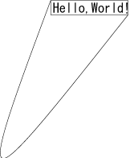
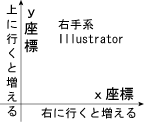

Win32OLE 活用法 【第 4 回】 Adobe Illustrator
書いた人: 志村 (hs9587)
プロローグ
あなたは Adobe Illustrator で図を書いているうちに マウス操作になにかもどかしさを感じるようになりました。
トラックボールでもこの思いに追従してくれることはありません。
この隔靴掻痒はペンタブレットでも全然変わりありません。
「座標なんて三角関数で計算すればいいのに。 コンピュータだったら座標計算くらい機械がやれよ !」
そして、思いました。
「いったいどうすれば思ったように絵が画けるんだろう ?」
はじめに
実はこのように思うのは少数派のようです。
はじめまして、志村 (hs9587) と申します。
Ruby やなにかプログラミング関係のところにいったとき、自己紹介の機会があると次のように言います。 ちょっとウケます。
「Adobe Illustrator を Ruby で自動操作しています」
ということで今回の記事を書くことになりました。
今回の目的
- Adobe Illustrator のオブジェクトモデルの特徴
- Win32OLE としての Adobe Illustrator の操作
- 「Hello, World !」サンプルスクリプト
あたりまえのことですが、IE や Microsoft Office シリーズだけが Windows アプリケーションではありません。 Adobe Illustrator (Windows 版) だって立派な Windows アプリケーションであり、 ちゃんと OLE 対応です。
今回の記事では、これまでの cuzic さんの記事とおなじように Win32OLE を使った Illustrator のオートメーションを紹介していきます。
Adobe Illustrator 自体にはさほど親しんでない読者のみなさんも多いと思いますので、 すこし Illustrator そのものの説明も交えながら進めていくことにします。 そのため、この記事ではあまり深く立ち入ったところまでは説明できませんし、 普段 Illustrator をあつかう上で常識的なことを省略することもあります。 もう一歩先のこと、さらにオブジェクトモデルの詳細や、いろいろなテクニックについては、 JavaScript や、AppleScript、VB による自動操作の頁を参考にしてください (参考リンクを最後にまとめています)。
使用環境についての注意
Adobe Illustrator は CS 版にバージョンアップしました。そろそろ CS2 も発表されていますが、 僕は 10.0.3 のままです (2005 年 5 月 8 日時点で CS2 英語版が発表済み)。 この記事では Illustrator 10 のまま話を続けます。
によれば、CS 版とはそれなりに相違があるそうです。 今回の記事は原理的なものですので、大きな影響はないものと考えます。
Ruby は ActiveScriptRuby を使っています。1.8 から Win32OLE が標準添付になったのはうれしいです。 とはいっても、基本的に Ruby 自体に関わるような記述は多くないので、 そちらの方の環境はさほど気にすることはないでしょう。
今回の目次
- プロローグ
- はじめに
- 今回の目的
- 使用環境についての注意
- 今回の目次
- Adobe Illustrator アプリケーションとの接続
- 線と字「Hello, World !」
- ドキュメントとレイヤー
- パスとパスポイント
- テキストアート
- Adobe Illustrator のオブジェクトモデル
- アプリケーションオブジェクト
- Application の代表的なプロパティとメソッド
- ページアイテムと各種描画アイテム
- 移動やサイズ変更
- GroupItem の構成要素へのアクセス
- コレクション類
- 直接生成すべきオブジェクト
- アプリケーションオブジェクト
- 単位と位置
- 右(左)手系の図
- 2.834645 points = 1 millimeter
- 三種の境界位置
- カラー
- 色空間: CMYK と RGB
- カラーオブジェクト
- カラーの変更
- 文字とフォント
- 文字列と文字
- フォントの指定
- アクションと DoScript
- 終わるのを待って
- ファイル操作と画像形式
- 新規作成とファイル読みこみ
- 保存とエクスポート
- スクリプトメニューからの実行
- スクリプトメニューから DOS 窓なしで
- 問い合わせメッセージボックス
- 「Hello, World !」いろいろ
- まとめ (おわりに)
- エピローグ
- 参考
- 著者について
Adobe Illustrator アプリケーションとの接続
Adobe Illustrator の ProgID は、 ‘Illustrator.Application’ になります。 ですから、Illustrator の OLEオブジェクトはこうやって作ることになります。
require 'win32ole'
#illu = WIN32OLE.new('Illustrator.Application')
illu = WIN32OLE.connect('Illustrator.Application')
module Illu; end
WIN32OLE::const_load(illu, Illu)ここで、Illustrator はすでに起動していないとうまくいかないようです。 起動できずにエラーになったり (Windows98SE、95 系)、 起動するもののその後の動作が不特定になることがあります (Windows2000、NT 系)。 (.new(‘Illustrator.Application’) の場合)
また、.new で新規に起動した場合、Illustrator 自体が Visible になりません (デフォルト動作)。 Visible 属性自体、リードオンリーなので操作できませんし、 気がつかないと Illustrator プロセスが残ったままになります。 不可視属性の Illustrator プロセスが残っていると、普通の Illustrator の手動操作でも、 パレット類が現れないなどの不都合があり、いろいろ問題です。
そういうことですので、慣れないうちは OLEオブジェクトの作成には、 Illustrator は別途起動しておいた上で .connect でおこなうのが安全です。
線と字「Hello, World !」
とりあえず、「Hello, World !」にしましょう。 Illustrator なのに文字だけというのも芸がないので、ちょっと線も引いてみます。
require 'win32ole'
illu = WIN32OLE.connect('Illustrator.Application')
module Illu; end
WIN32OLE::const_load(illu, Illu)
doc = illu.Documents.Add
rect = doc.PathItems.Rectangle(500+20,200-5, 192,36)
rect.Filled = false
path = doc.PathItems.Add
pt1, pt2 = path.PathPoints.Add, path.PathPoints.Add
pt1.Anchor, pt2.Anchor = [200-5,500+20], [200-5+192,500+20-36]
pt1.LeftDirection, pt1.RIghtDirection = [pt1.Anchor]*2
pt2.LeftDirection, pt2.RIghtDirection = [pt2.Anchor]*2
text = doc.TextArtItems.Add
text.Position = [200, 500]
text.Contents = 'Hello,World!'
text.TextRange.Size = 32
print 'PRESS ENTER'; gets
doc.Close(Illu::AiDoNotSaveChanges)
紙の真ん中あたりに「Hello, world !」と、それを囲んで四角い枠と対角線一本。
アートボード (紙) の大きさを指定してるわけではないので、
ふだんの使用状況によってはちょっとずれるかもしれません。
 helloworld.pdf
helloworld.pdf
せっかくなので、順に説明しましょう
require 'win32ole'
illu = WIN32OLE.connect('Illustrator.Application')
module Illu; end
WIN32OLE::const_load(illu, Illu)前述のとおり、.connect で Applicationオブジェクトを作ります。 Illu モジュールには Illustrator で定義されている定数をロードします。 (定数一覧)
doc = illu.Documents.Add文書 (アートボード) を作ります。 Illustrator では、この描画可能領域ののことをアートボード (The artboard) といいます。 厳密には、文書 (Documentオブジェクト) とは違うものなのかもしれませんが、 この記事ではとくに区別せず、今後は単に文書ということにします。
rect = doc.PathItems.Rectangle(500+20,200-5, 192,36)
rect.Filled = false四角を書いて、中の塗りは なしにします。座標は決め打ち。 線画の類は各文書の PathItemsプロパティに依頼するわけです。
path = doc.PathItems.Add
pt1, pt2 = path.PathPoints.Add, path.PathPoints.Addさっきの四角の対角線です。 まず無内容の線 (PathItem) をつくり、頂点を二つ加えます。
pt1.Anchor, pt2.Anchor = [200-5,500+20], [200-5+192,500+20-36]
pt1.LeftDirection, pt1.RightDirection = [pt1.Anchor]*2
pt2.LeftDirection, pt2.RightDirection = [pt2.Anchor]*2そして二つの頂点の座標を指定します。 左右の Direction を指定しないでおくと面白いです、初期値があるんでしょう、 なんだかとっちらかった方向に曲がっていきます。  (先ほどと画像の倍率は変えています) helloworld_hen1.pdf (どっちにどのくらい曲がるかは環境や履歴によってまちまちです)
text = doc.TextArtItems.Add
text.Position = [200, 500]
text.Contents = 'Hello,World!'
text.TextRange.Size = 32文字を配置するのは TextArtItem です。 フォントサイズの指定には、さらに TextRangeオブジェクトを呼びます。
print 'PRESS ENTER'; getsRuby の入力待ち。コマンドラインで「Enter」キーを押すまで待ってます。 その間に Illustrator にできた「Hello world !」文書に触ってみてください。
注意、こらからも全般にそうですが描画中に不用意に手を出すと止まってしまいます。 描画中に触るのは、Window 枠とスクロールバー、拡大縮小率ポップアップ選択 くらいにしておきましょう
doc.Close(Illu::AiDoNotSaveChanges)とくに文書は保存せずに終了します。
いかがでしょうか。 「Hello world !」ごときにちょっと長かったかもしれませんが、 すこし様子がつかめたのではないかと思います。
Illustrator のオブジェクトモデルなどの一般論を説明する前に、 ここに出てきたいくつかのオブジェクトについて説明しましょう。 その前にドキュメントとレイヤーの話しもしたほうがいいですね。
ドキュメントとレイヤー
Adobe Illustrator での文書の取りあつかいは Documentオブジェクト単位になります。 ちなみに、ページというのはないです ( 1 ページのものしかできません)。
Documentオブジェクトにはいくつかのレイヤー (Layer) という層があり、それらが積み重なってひとつの文書になります。 いろいろな図形を書くのはどこか一枚のレイヤーです、文書に直接配置するわけではありません。 レイヤーを特定せずに文書になにか描画アイテムを作ると、 ActiveLayer といわれるそのときフォーカスのあるレイヤーに配置されます。
| doc.Layers.item(1) |
| doc.Layers.item(2) |
| …… |
| doc.Layers.item(doc.Layers.Count) |
(doc は「Hello, World !」サンプルのときと同じく、Illustrator の Documentオブジェクトとしています)
doc.ActiveLayer ≒ doc.Layers.item(doc.Layers.Index(doc.ActiveLayer))この「≒」で前者と後者は、Ruby の Win32OLEオブジェクトとしては違う (オブジェクトIDが異なる) ものですが、 Illustrator の方では同じものを指します。 .item() とか .Index() などのメソッドについてはまたあとで説明します。
パスとパスポイント
線画は、文書やそのレイヤーの PathItemsプロパティから取得できます。 既存のものはコレクションのメンバーとして、新規のものは Addメソッドで作成します。 直線、ベジェ曲線、各種図形などの線画は PathItemオブジェクトだというわけです。
線を引くということは、PathItemオブジェクトに頂点 (PathPointオブジェクト) を 追加するということになります。 サンプルのように、まず空の PathItemオブジェクトを作り、 それにいくつかの頂点をつけ加えていろいろ線画を作ります。 頂点の追加は、PathItemオブジェクトの PathPointsプロパティに依頼したわけです。 その頂点の状態や左右の方向性を設定することで、直線やベジェ曲線を形づくります
PathItemオブジェクトには線の状態を設定する以外に、内部の塗りの設定もあります。
| 線 | 説明 |
| Closed | 閉パスかどうか |
| Stroked | 線の表示非表示 |
| StrokeWidth | 線の巾 |
| StrokeColor | 線の色 |
| …… | 点線の設定、頂点や端の処理など |
| …… | その他オーバープリントの設定など |
| 塗り | 説明 |
| Filled | 中が塗られているか |
| FillColor | 塗りの色 |
| …… | その他オーバープリントの設定など |
テキストアート
文字を描くのは TextArtItem です。 このオブジェクトを作るには、いつものように文書やレイヤーの TextArtItems に依頼します。
TextArtItemオブジェクトの Contentsプロパティが表示文字列になります。 もし改行するなら、Windows であっても “\r” を使ってください。 文字の大きさやそのほかの属性を設定するには、Contents に入っている文字ではなく、 また別のオブジェクトを呼びます。 TextArtItemオブジェクトの TextRangeメソッドで得られる TextRangeオブジェクトです。
TextRangeオブジェクトにはフォント関係のプロパティもあり、 それでフォントやサイズの指定もできます。
Adobe Illustrator のオブジェクトモデル
「Hello, World !」サンプルとその説明をしてきましたが、 Adobe Illustrator (OLE) のオブジェクトの様子がすこし分かったでしょうか。 この節では、 もうすこし一般的に Illustrator のオブジェクトモデルを見ていこうと思います。
その前にすこし注意しておきます。無理もないことなのですが以下に説明するオブジェクトで、 そのメソッドやプロパティへの代入 (Rubyではこれもメソッドですね) の多くは値 (self) を返してくれません。 Ruby の言葉遣いでいえば、破壊的なメソッドのように振舞います。 メソッド呼び出しの連鎖や式の値を return するときなど、 いつもの Ruby のつもりで記述すると意に沿わない結果になることがあります。
ちょっと、移動と回転のメソッドを例に取ります (各メソッドについてはあとで説明します)。
# 「Hello, World !」サンプルの四角を移動して回転
# rect = doc.PathItems.item(2) # of helloworld.rb
rect.Translate(50, 40) # deltaX and deltaY
rect.Rotate(30) # degree
# rect.Translate(10, 20).Rotate(30) #=> NoMethodError: undefined method `Rotate' for nil:NilClass 例のようなメソッドの連鎖はできないのですが、
doc.TextArtItems.item(1).Contents は、”Hello,World!” という文字列を返します。
このような、プロパティ参照の連鎖なら大丈夫です
例のようなメソッドの連鎖はできないのですが、
doc.TextArtItems.item(1).Contents は、”Hello,World!” という文字列を返します。
このような、プロパティ参照の連鎖なら大丈夫です
アプリケーションオブジェクト
今回、Win32OLEオブジェクトとして最初に作ったのが Applicationオブジェクトです。 Adobe Illustrator オートメーションの基本になります。 あつかう文書類へのアクセスには Documentsプロパティや ActiveDocumentプロパティを用いることになります。 また、ファイルを開くのもこのオブジェクトの Open(<ファイル名>)メソッドです。
それ以外にもアプリケーション情報全般 (バージョン等) や、 Selection という文書内の選択アイテムの配列、 そのとき使用可能なフォントのコレクション (TextFaces) があります。
それから、Illustrator 自体のアクション類や、別の JavaScript を実行することができます (DoScript, DoJavaScript, DoJavaFile)。 各種 Illustrator アクションやパレットからの操作などには、 スクリプトからは呼べないものも多いので、 こうやってアクションを呼ぶのはすごく便利です(またあとで説明します)。
最後に、各描画アイテムの線型変換用の行列の演算もここで提供されています。
Application の代表的なプロパティとメソッド
プロパティ
| 名前 | R/O | 説明 |
| Documents | 文書のコレクション | |
| ActiveDocument | カレント文書 | |
| Selection | カレント文書の選択アイテムの配列 | |
| TextFaces | R/O | 使用できるフォント |
| Version | R/O | バージョン |
| ActionIsRunning | R/O | アクションの実行中かどうか |
| Visible | R/O | 可視属性、代入不可 |
メソッド
| 名前 | 説明 |
| Open | ファイルを開く |
| Quit | Illustrator を終了する |
| Redraw | 全体を描画しなおす |
| DoScript | アクションの実行 |
| DoJavaScript | JavaScript (文字列) の実行 |
| DoJavaFile | JavaScriptファイルの実行 |
| IsSingularMatrix | 正則行列じゃないかどうか |
| …… | 行列関係ほか |
ページアイテムと各種描画アイテム
Adobe Illustrator の描画アイテム (オブジェクト) にはいくつか種類があります (「Hello, World !」サンプルでは、PathItem と TextArtItem が出てきました)。 それぞれの描画アイテムは、各文書や前述のレイヤーのプロパティとして提供される 種類ごとのコレクションに属しています、 あるいは各コレクションの Addメソッドで生成されます。
代表的な描画アイテム(オブジェクト)
| 描画アイテム | 説明 |
| PageItem | 全部の種類を代表する |
| PathItem | 線画類 |
| TextArtItem | テキストの配置 |
| GroupItem | 各種描画アイテムのグルーピング |
| …… | (外部)画像データ、データ連携、複合パス、ほかいろいろ |
個々の描画アイテムへのアクセスは何通りもあります。 たとえば PathItemオブジェクトの場合。
- 文書 (Documentオブジェクト) の PathItemsプロパティの所要の要素
- 文書の適切なレイヤー (Layerオブジェクト) の PathItemsプロパティの所要の要素
- 所属する GroupItem の PathItemsプロパティの所要の要素
- なにかの PageItemsプロパティの所要の PageItemオブジェクトの PathItemプロパティ(R/O)
- 要件が PathItem とは違う種類の描画オブジェクトのとき、これはエラーになります
# 「Hello, World !」サンプルで作った対角線
# PathItems
doc.PathItems.item(1)
# Layer経由
doc.Layers(1).PathItems.item(1)
doc.ActiveLayer.PathItems.item(1)
# 次々節のグループ化をしたら
doc.GroupItems.item(1).PathItems.item(1)
# PageItems
# 次々節のグループ化の前なら
doc.PageItems.item(1).PathItem
# 次々節でグループ化した後だとすこしずれます
doc.PageItems.item(1).GroupItem.PageItems.item(1).PathItem最後の方法についてはちょっと注意が必要です。 PageItemオブジェクトは、全ての描画オブジェクトを代表しますが、あまり多態的ではありません。 その PageItemTypeプロパティを調べ、それに応じて所要のプロパティを呼び出す必要があります。
path = doc.PageItem.item(1).PathItem if doc.PageItem.item(1).PageItemType == 5 # Illu::AiPathItemPageItemType には、AiPageItemType 定数に相当する整数値が返ります。 その代表的な値は次のようになります。詳しくは Adobe の資料PDFを見てください。 (参考リンクにあります)
| AiPageItemType (代表的なもの) | 説明 |
| AiCompoundPathItem = 1 | 複合パス |
| AiGroupItem = 3 | 描画アイテムのグループ |
| AiPathItem = 5 | パス |
| AiRasterItem = 8 | 画像 |
| AiTextArtItem = 10 | テキスト |
移動やサイズ変更
PageItem をはじめ、各描画アイテムには移動やサイズ変更のメソッドが用意されています。 返り値はない (selfを返さない) ので注意してください。
| メソッド | 引数の説明 |
| Resize(scaleX, scaleY) | x,y方向の拡大縮小(百分率) |
| Rotate(angle) | 回転角度(度) |
| Transform(Matrix) | 別に定義した変換行列での一次変換 |
| Translate(deltaX, deltaY) | 移動、ポイント単位 |
引数にはほかにも線や塗りのパターン自体も拡大するかどうかなど細かい引数が設定できます。 詳しくは Adobe の資料 PDF を見てください。
回転に関してはもうひとつ注意があります。 回転の中心はその描画アイテムを囲む長方形の中心です (GeometricBounds)。 図形の中心 (重心) でもなければ、原点でもありません。 ひとつ回転するだけならまだしも、 いくつかのアイテムを同時に回転するときにはとくに注意してください。 あらかじめ回転中心を計算しておくか、 次節のように GroupItem に一まとめにしてから回転させるのがいいでしょう。
とくに説明しませんが、任意の点を中心に回転させるように計算しておく例をあげておきます。 rotate.rb
GroupItem の構成要素へのアクセス
任意の種類の描画アイテムをひとまとめにあつかうのが GroupItemオブジェクトです。 構成要素へのアクセスは、また所要のコレクション (PathItemsプロパティ、TextArtItemsプロパティなど) 経由になります。
グループに構成要素を追加するには、 各描画アイテムの MoveToBeginning(Document/Layer/GroupItem)、MoveToEnd(Document/Layer/GroupItem) メソッドを使います。 Cut/Copy/Pasteメソッドだと位置が画面中央に移動してしまうので、 それらを使ってグループ化するのはやめた方がいいでしょう。
# 「Hello, World !」サンプルの四角と対角線をグループ化
# rect = doc.PathItems.item(2); path = doc.PathItems.item(1) # of helloworld.rb
grp = doc.GroupItems.Add
rect.MoveToBeginning(grp)
path.MoveToBeginning(grp)
# グループを回転、反転
grp.Rotate(90)
grp.Resize(-100, 100)
コレクション類
以上みてきたように、各描画アイテムへのアクセスは、 上位オブジェクトの種類別コレクションプロパティ経由になります。
それらのコレクションはちょっと非力です、すくなくとも、 Ruby の配列やハッシュに慣れていると少々不便に感じます。 AppleScript、JavaScript、VB といった言語で共通に使える機能というと、 どうしても限られたものになってしまうのかもしれません。
コレクションのインデックスは 1 からです (ゼロはじまりではないです)。
| 代表的なもの | 説明 |
| Count | コレクションの要素の数 |
| Add | 新規描画アイテムの生成 |
| Index(<アイテム>) | 所要のアイテムがコレクションの何番目か |
| item(key) | コレクション key番目の描画アイテム |
| Remove, RemoveAll | 描画オブジェクトのコレクションからの削除 |
| …… | ほかに親オブジェクトとか、所属文書など |
| …… | ものによっては、図形の追加など |
コレクションのインデックスについてもう一度説明します。 描画アイテムの重なりの一番上が 1 、下に向かって増えていきます。 Ruby の WIN32OLEオブジェクトは eachメソッドを与えてくれますが、 この実行中でも番号は重なり順番に即座に反映されます。 上下の配置を変更したり、Remove のときなどは気をつけないと変なことになります。
そういうときは逆順に実行した方がいいでしょう。 WIN32OLE に reverse_each はないので、自分で作らないといけないです。
直接生成すべきオブジェクト
ここまで、Applicationオブジェクトから派生するいろいろなオブジェクトとコレクション を見て来ました。 ところで、Adobe Illustrator オートメーションでは、 それら以外にも WIN32OLE.new で直接生成すべきオブジェクトがあります。 カラー関係と、ファイルオプション、変換行列の生成です。
直接生成すべきもので代表的なものは次のようになります。 それぞれの ProgID は ‘Illustrator.<オブジェクト名称>’ になります。
- Color関係
- Color
- CMYKColor
- GrayColor
- RGBColor
- 効果関係カラーほか
- ファイル書きだしオプション
- IllustratorSaveOptions
- PDFSaveOptions
- ExportOptionsPhotoshop
- EPS, GIF, JPEG, PNG8, PNG24, SVG のオプション
- ファイル読みこみオプション
- OpenOptionsPDF (PDF 文書のなかの読みこむページを指定します)
- 変換行列
- Matrix
Illustrator 起動中であっても それぞれのオブジェクトは個別に稼動しているわけではありません。 .connect ではなくて .new を使って生成します。
cmyk = WIN32OLE.new('Illustrator.CMYKColor')
cmyk.Cyan, cmyk.Magenta, cmyk.Yellow, cmyk.Black = 0,100,0,0 # マゼンタ単位と位置
今まで説明していませんでしたが、Adobe Illustrator の描画領域の座標システムは、 アートボード(文書)の左下隅を原点にした右手系です。  単位はポイント。
コンピュータのグラフィックでは、左上を原点にする左手系も多いので、
混乱しないよう注意してください。

その座標系で、各描画アイテムの位置指定 (Position) は、左上の座標です。 描画物を囲む長方形は左上点と右下点の座標で指定されます (GeometricBounds, VisibleBounds, ControlBounds の 3 種があります)。
右 (左) 手系の図
この図も Ruby で描いています。 right(left)system.rb 一応ソースもありますが、私製のライブラリや Illustratorアクションを使っているので分かりにくいですね、 雰囲気だけでも伝わるでしょうか。私製ファイル類へのリンクは最後にあげておきます。
2.834645 points = 1 millimeter
Adobe Illustrator スクリプトでの座標や、位置指定、サイズなどは基本的にポイント単位です。 ほかの単位にすることはできませんので、事前に換算して設定することになります。
単位換算表
| センチ | 28.346 points = 1 centimeter |
| インチ | 72 points = 1 inch |
| ミリ | 2.834645 points = 1 millimeter |
| パイカ | 12 points = 1 pica |
| Q (級) | 0.709 point = 1 Q ( 1 Q = 0.25 millimeter) |
表の記述は、記事末の参考リンクにあげた Adobe のドキュメントに依る。 Adobe のドキュメントでは、今 (2005/12/10現在、CS2版のもの) に至るまで Q の millimeter 換算値が 0.23 と間違っているので注意して下さい。 また、記載値の有効桁数なども Adobe ドキュメントに依拠した。
付記: Q の数値について、読者の方から間違いとのご指摘がありましたので、修正しました。 ご指摘まことにありがとうございます。 2005年12月吉日 志村 弘之・Rubyist Magazine 編集部
三種の境界位置
各描画アイテムの描画領域は三種類の長方形で示されます。
- GeometricBounds
- 線巾 (StrokeWidth) がないものとして囲んだ長方形
- VisibleBounds
- 線巾 (StrokeWidth) 込みで囲んだ場合の長方形
- ControlBounds
- ベジェの接線指定などのコントロールポイントを含めてのもの
各長方形は、左上と右下の座標を並べた 4つの数値 (の配列) で代表されます。 とくに、描画アイテムの位置 (Position) 自体は GeometricBounds の左上座標になります。
カラー
このあたりのあつかいが、CS 版になって大きく変わったところだそうです。 Colorオブジェクトを経由しないようになったということですので、 CS 版をお使いの場合はご注意ください。
色空間: CMYK と RGB
Adobe Illustrator であつかう色の体系には、大きく分けて 印刷用の「CMYK」と画面表示用の「RGB」があります (色空間といいます)。 文書を最初に作るとき (Documents.Add) に指定するのですが、 一旦文書を作ると変更できないです。また、文書内の描画アイテムの色指定は 文書自体の色空間に反するものは設定できません。
| CMYK | AiDocumentCMYKColor = 2 | 印刷用 4色 |
| RGB | AiDocumentRGBColor = 1 | 画面用 3色 |
描画アイテムの色指定には、灰色やほかのもあり、必要に応じて使い分けることになります。
- ほかの色 (Gradient, Pattern, Spot) の適性はまだ確かめていません。CMYKColor、RGBColor 両方との相性も考えると組み合わせも多くなります。どうなっているかは、読者のみなさんで試してみてください。
カラーオブジェクト
各描画アイテムの色は付属の Colorオブジェクトになります。 PathItem であれば、StrokeColorプロパティと FillColorプロパティということになるわけです。
その Colorオブジェクトの Colorプロパティ (R/O リードオンリー) はカラーの種類です。 (CMYK, Gradient, Gray, Pattern, RGB, Spot)。 この値にしたがって、それぞれの種類のカラーオブジェクトを設定することになります。
| AiColor enumeration |
| AiColorNone = 0 |
| AiColorCMYK = 1 |
| AiColorGray = 2 |
| AiColorRGB =3 |
| AiColorSpot =4 |
| AiColorPattern = 5 |
| AiColorGradient = 6 |
前にも説明したように、設定する Colorオブジェクト類は Applicationオブジェクトから生成するのではなく、直接生成すべきオブジェクトです、 ご注意ください。
カラーの変更
描画アイテムの Color 系プロパティ (オブジェクト) の Colorプロパティは R/O です、変更できません。 Colorオブジェクトの各色プロパティ (CMYK, Gray, RGB など) に 直接生成した各色のオブジェクトを代入します (文書の色空間に矛盾する代入はできません)。
それでは「Hello, World !」サンプルの PathItemオブジェクトの線に 色をつけることを考えましょう。
# path = doc.PathItems.item(1) # of helloworld.rb
cmyk = WIN32OLE.new('Illustrator.CMYKColor')
cmyk.Cyan, cmyk.Magenta, cmyk.Yellow, cmyk.Black = 0,100,0,0 # マゼンタ
path.StrokeColor.CMYK = cmykCMYKColorオブジェクトは、WIN32OLE.new で直接生成します。 そして各色の値を設定します、 値の範囲は、CMYK、Gray は 0〜100.0、RGB では 0〜255.0 です、 この範囲が違うことにも注意します。
文字とフォント
前にも書きましたが、 テキスト文字列内で改行するには “\r” を使います、”\n” ではないです。
文字列と文字
TextArtItem の文字の属性は、TextRangeメソッドで部分文字列や一文字ずつの TextRangeオブジェクトを指定して、個別に色や大きさ、フォントを指定します。 (一文字を指定する Charactorオブジェクトもあります)
| メソッド | 引数の説明 |
| TextRange(rangeStart, rangeEnd) | 初めと終わりの文字位置 |
引数は、TextRange として取り出したい部分文字列の位置 (はじめからの文字数) です。 省略すると全文字列になります。 文字位置の最初は 1 です (ゼロではないです)、また、2バイト文字も 1文字とかぞえます。
フォントの指定
TextArtItem の TextRangeメソッドで、適用すべきテキストの範囲を選び (設定し)、 その TextRangeオブジェクトの、Fontプロパティにフォント名称を指定します。 名称は基本的に英字アルファベットになります、 MS-PGothic、MS-PMincho、MS-Gothic、MS-Mincho などです。
そこで使用できるフォント名称は、Application.TextFaces で探すことになります。
require 'win32ole'
illu = WIN32OLE.connect('Illustrator.Application')
illu.TextFaces.each{ |textface| puts textface.Name }ではちょっと TextRange を使ってみましょう。 「Hello, World !」サンプルの文字色やフォントを変えます。
# text = doc.TextArtItems.item(1) # of helloworld.rb
cmyk = WIN32OLE.new('Illustrator.CMYKColor')
cmyk.Cyan, cmyk.Magenta, cmyk.Yellow, cmyk.Black = 100,0,0,0 # シアン
hello = text.TextRange(1,5) # Hello のところ
hello.FillColor.CMYK = cmyk # 色をつける
world = text.TextRange(7,11) # World のところ
world.Font = 'MS-PMincho' # フォントを変える
アクションと DoScript
スクリプトの作業では、「矢印を引く (パスを矢印にする)」、 「パスファインダで交点を求める」のような パレット・メニューやアクションの実行で得られる機能を全部実現してやることはできません。 そのようなときは、あらかじめアクションに登録しておいて、 Applicationオブジェクトの DoScriptメソッドでそのアクションを呼ぶことになります。
その際には、アクション類は選択されたオブジェクトに作用することも多いので、 アクティブドキュメントの Selectionプロパティとのやり取りも必要になってきます。 また、アクションの実行中に次の処理が始まってはよくないので、 そのアクションが終わるのをきちんと待ってないといけません。
「Hello, World !」サンプルを使って、アクションの実行をしてみましょう。 アクションの実行には、アクションの名前と、所属するアクションのセットの名前を両方指定します。 ‘初期設定アクション’ は、Illustrator に最初からはいっているアクション集 (セット) です。
# 「Hello, World !」サンプルの対角線をひっくり返す
# path = doc.PathItems.item(1) # of helloworld.rb
path.Selected = true
illu.DoScript('水平にリフレクト','初期設定アクション')終わるのを待って
アクションの実行には結構時間がかかることがあるので、そこできちんと待たないと 期待する動作をしないことになります。 たとえば、 アクションの実行が終る前に必要なオブジェクトの選択を解除してしまってはいけないですね。 それには Applicationオブジェクトの ActionIsRunningプロパティでチェックします。
# 「Hello, World !」サンプルの対角線をひっくり返す、その後選択解除
# path = doc.PathItems.item(1) # of helloworld.rb
path.Selected = true
illu.DoScript('水平にリフレクト','初期設定アクション')
sleep 0.23 while illu.ActionIsRunning # 0.23に深い意味はない
doc.Selection = [] # 選択解除(本当は、アクション実行用の選択の前にも全選択の解除をしておいた方がいいです)

ファイル操作と画像形式
Adobe Illustrator のファイル操作です。 文書をファイルに書きだすときにはいろいろなファイル形式を選べます、 Illustrator形式 (拡張子 .ai)、 PDF、Photoshop、 EPS、GIF、JPEG、PNG8、PNG24、SVG です。 いちど読みこんでからファイル形式を指定して書きだせば、画像形式の変換にもなります。
新規作成とファイル読みこみ
いままでにもありましたが、 文書を新規作成するのは、Documentsコレクションオブジェクトの Addメソッドです、 文書の色空間や大きさも指定できます。
| メソッド | 引数の説明 |
| Add(<色空間>, width, height) | 色空間を指定する整数値と、巾、高さ |
色空間については前に説明しました、CMYK なら 2、RGB なら 1 を指定します、 巾と高さはポイント単位。 引数は省略できます、そのときは履歴やふだんの使用にあわせて既定値がはいります。
ファイルを開くのは、Applicationオブジェクトの Openメソッドです。
| メソッド | 引数の説明 |
| Open(<ファイル名>, <オプション>) | ファイル名と、色空間か PDFOpenOptions |
画像形式は、拡張子などから Illustrator が自動判別します、色空間も大体それで決まります。 オプションは省略可能、読み込むファイルの名前の指定はフルパス名が安心です。
PDF を読みこむときには何ページ目を読むかを指定します。 PDF 文書はたくさんページがあることが多いのですが、Illustrator は 1ページのものしか あつかうことができません。そのためどのページを読むかの指定が必要になります。 (省略すると最初のページです)
openpdf = WIN32OLE.new('Illustrator.PDFOpenOptions')
openpdf.PageToOpen = 7 # ページ指定保存とエクスポート
文書の書きだしには二種類のメソッドを使います。 Documentオブジェクトの SaveAsメソッド (Illustrator 形式、EPS、PDF)、Exportメソッド (それ以外) の二つです。 こころみに、先ほどの「Hello, World !」サンプルの画像を PNG 形式と PDF に書きだしてみましょう。
png8export = WIN32OLE.new('Illustrator.ExportOptionsPNG8')
fname = File.join(Dir.pwd, 'helloworld8.png')
doc.Export(fname, Illu::AiPNG8, png8export)
pdfsave = WIN32OLE.new('Illustrator.PDFSaveOptions')
fname = File.join(Dir.pwd, 'helloworld.pdf')
fname.gsub!(File::SEPARATOR, File::ALT_SEPARATOR) if File::ALT_SEPARATOR
doc.SaveAs(fname, pdfsave) helloworld.pdf
helloworld2png.rb
helloworld.pdf
helloworld2png.rb
書きだし先のファイル名はフルパス名 (ドライブレター付き) です。 Exportメソッドでは、画像形式を指定しておく必要がありますが、そのときオプションは省略できます。 とくに SaveAsメソッドでは、ファイルパス名の区切り文字にも注意してください。
| AiExportType |
| AiJPEG = 1 |
| AiPhotoshop = 2 |
| AiSVG = 3 |
| AiPNG8 = 4 |
| AiPNG24 = 5 |
スクリプトメニューからの実行
今まで書いてきた rubyスクリプトは Adobe Illustrator の外から実行していました (コマンドプロンプト等)。 それだけではなくて、Illustrator のスクリプトメニューからの呼出しもできると便利そうです。 しかし、Illustrator (Windows版) は、拡張子 .vbs、.js、.exe しか認識しません。 それでもなんとか実行したいですね、WScript.Shell.Run や WScript.Shell.Exec によって rubyスクリプトを呼び出すだけの VBScriptを書いてやります (拡張子 .vbs)。 (べつに、JavaScript でもいいです)
Dim WshShell, oExec
Set WshShell = CreateObject("WScript.Shell")
Set oExec = WshShell.Exec( <rubyスクリプトのフルパス名> )または
Dim WshShell
Set WshShell = CreateObject("WScript.Shell")
WshShell.Run( <rubyスクリプトのフルパス名> )Execメソッドは、標準入出力などと相互作用できて便利なのですが、 WSH (Windows Scripting Host) のバージョン によってはありません。 ないときは Runメソッドを使います。
あるいは exerb によって .exe 実行ファイルにするのもいいです。
さて、Illustrator の [ファイル]-[スクリプト]-[参照] メニューでの初めに参照するフォルダは (標準的なインストールでは)
C:\Program Files\Adobe\Illustrator 10.0.3\Support Files\Contents\Windows\になります、そのあたりかサブフォルダを作っていれてやればいいでしょう。 ここのフォルダには、.vbs、.js、.exe へのショートカット を置いても参照されます。
また、[ファイル]-[スクリプト]-メニューから直接呼び出せるようにするには、
C:\Program Files\Adobe\Illustrator 10.0.3\プリセット\スクリプト\にそのファイルを置きます (標準的なインストールの場合)。 ここはショートカットを置いてもダメです。 実際にこのメニューに登録するには、Illustrator を再起動する必要があることに注意します。
スクリプトメニューから DOS 窓なしで
これでスクリプトメニューからの呼び出しができるようになります。 そうは言っても、.vbsファイルからの呼び出しのたびに DOS 窓が現れるのを煩わしく感じる場合もあるでしょう。 そのときは、.vbsファイルでの呼び出しを次のようにするといいです。 ‘””’ は、VBScript文字列での ‘”’ のエスケープです。 また rubyスクリプトの指定もフルパス名が安心です。
WshShell.Run( "WScript.exe ""<rubyスクリプトのフルパス名>"" ")問い合わせメッセージボックス
さて、スクリプトの実行中になにかメッセージを表示したいことがあります。 それから終了メッセージも表示できるといいですね。 Adobe Illustrator 自体のスクリプトには用意されていない (OLE) ので、 そのようなメッセージボックスは別の手段で実現することになります。 おおむね次のような手段があると思います。
- Rubyの (添付) ライブラリ
- VisualuRuby などの GUIライブラリを使用する
- Win32API で Windows のメッセージボックスやダイアローグを直接操作
- WScript.Shell の Popup
- やはり Win32OLE で WScript.Shellオブジェクトを呼んで、その Popupメッセージ
- JavaScript の alertメソッド
- DoJavaScript で JavaScript の alertメソッドを実行
require 'vr/vruby'
frm = VRLocalScreen.newform
frm.messageBox('メッセージ', 'Title', 0 + 48 + 0x40000) wsh = WIN32OLE.new('WScript.Shell')
wsh.Popup('メッセージ', 0, 'Title', 0 + 48 + 0x40000) illu.DoJavaScript('alert("メッセージ");')DoJavaScript での alert は、Illustrator 自体の機能を使うのはいいのですが、 alert 自体の返り値がないのはすこし不便です。 WScript.Shell の Popup と、VisualuRuby の messageBox は、結局同じものを呼んでるので大きな相違はないです。 [OK][Cancel] や [Yes][No] ボタンの返り値も便利です (ボタン表示や返り値の詳細は、Windows の メッセージボックスAPI について参照してください)。 VisualuRuby やそのほかの Ruby の GUIライブラリを用いれば、いろいろきめ細かい応答画面が作成できます。
「Hello, World !」いろいろ
ここまでのいろいろな操作を「Hello, World !」サンプルにつけ加えてみました。
 helloworld_sample.pdf
helloworld_sample.rb
helloworld_sample.pdf
helloworld_sample.rb

まとめ (おわりに)
いかがだったでしょうか。
今回は、ちょっと趣向をかえて、Adobe Illustrator をあつかうことを紹介しました。 線を引いたり字を書いたり、ファイル操作や画像形式の変換など、基本的なことは説明できたと思います。 でも、Adobe Illustrator での実作業では、ここでは説明できなかった内容がまだまだあります。 プログラミングの範囲をこえ、デザインや組版の技術について考えさせられる事もたくさんあります。
しかしながら、今回紹介したような内容でも、なにかの手がかり、出発点になるのではないかと思います。
それから、事は Adobe 製品だけに限りません、もちろん Microsoft 関連だけでもありません。 どんなアプリケーションソフトでも Ruby で自動化してみましょう (OLE対応)。
次回からはいつものように cuzic さんの記事に戻る予定です。
どうぞ、お楽しみ(僕も楽しみにしています)。
エピローグ
Ruby活用事例集にもあげたのですが、下記のような図を描くのに使いました。 ぜひご覧ください、もし手にはいるようなら実際に手に取っていただけるとうれしいです。
- 北野勇作どうぶつ図鑑（１〜６）【ハヤカワ文庫JA】
- http://jp.rubyist.net/?RealWorldRuby#l23
- 全冊、表題の動物の折り紙の彩色折り紙展開図を折り込んでいます。山折り線、谷折り線いり展開図は、Ruby-Win32OLE-Illustrator で作図したものに、西島大介さんがイラストをつけたものです。
- アニメージュ 2003年10月号 別冊付録「ガンダムSEED折り紙教室」
- http://jp.rubyist.net/?RealWorldRuby#l24
- 折り方説明図です。Ruby-Win32OLE-Illustrator で作図したものを、アニメージュ編集部のデザイナーさんがレイアウト、写真添付などして完成させたものです。
- 「ハロと風船の折り紙 」
参考
- Adobe Illustrator
- Adobe Illustrator SDK Scripting documentation
- http://partners.adobe.com/public/developer/illustrator/sdk/index_scripting.html
- ドキュメント (英語) ページ CS 用
- Adobe Illustrator CS JavaScript Reference (PDF: 915k)
- http://partners.adobe.com/public/developer/en/illustrator/sdk/AIJavaScriptReference.pdf
- JavaScript での説明 (CS 用)
- Adobe Illustrator CS Scripting Guide (PDF: 1.48M)
- http://partners.adobe.com/public/developer/en/illustrator/sdk/IllustratorScriptingGuide.pdf
- AppleScript VB (VBScript) の説明 (CS 用)
- Adobe Illustrator CS Scripting Getting Started with JavaScript (PDF: 62k)
- illustrator_scripting_guide.pdf
- http://www.adobe.com/products/illustrator/pdfs/illustrator_scripting_guide.pdf
- AppleScript VB (VBScript) の説明 (ver.10 用)
- AIJavaScriptReference.pdf
- JavaScript での説明 (ver.10 用)、Adobeサイト内に発見できず。
- ‘Illustrator10自動化作戦with JavaScript’
- 古籏 一浩 (著); 毎日コミュニケーションズ ; ISBN: 4839913544 ; (2004/01)
- IllustratorCS自動化作戦with JavaScript
- http://www.openspc2.org/book/IllustratorCS/
- その CS版、出版はされないそうです。同サイトには、Photoshop、InDesign の自動化の話などもあります
- イラレで便利 for Adobe Illustrator
- http://park17.wakwak.com/~ddpp/6ot/js_ill/index.html
- イラストレーターのクラタさんのところです。JavaScript の公開もしています、イラストレーションの実践で鍛えられた事柄群です。
- ActiveScriptRubyでIllustrator10
- http://www.geocities.jp/technopolis9587/rubyillustrator/memo.html
- 拙頁。今まで Ruby で Illustrator を操作していて出会ったいくつかの事柄を適当に羅列したもの。全然まとまってないです。
- Exerb
- http://exerb.sourceforge.jp/
- Exerb は、オブジェクト指向言語Rubyのスクリプト/拡張ライブラリを単一で動作可能なWindows 実行形式ファイルに変換するソフトウェアです。
- VisualuRuby
- VisualuRuby計画（仮称）http://www.osk.3web.ne.jp/~nyasu/software/vrproject.html
- Ruby GUIライブラリ VisualuRuby http://www.gesource.jp/ruby/gui/vruby.html
- 私製ライブラリ illustrator.rb illustruby.rb
- 私製アクション定義ファイル myActions.aia
- AI定数一覧
著者について
志村 (hs9587) は 印刷会社に勤める (Web 系) プログラマーで、SF ファンです。 時々 SF 系の折り紙を折ります。
あるときその折り紙の図が欲しいと頼まれました。 後工程のイラストレーターさんやデザイナーさんのために、 Adobe Illustrator 形式のファイルが望ましいと言われました。
もう、Ruby でやるしかないと思いました。